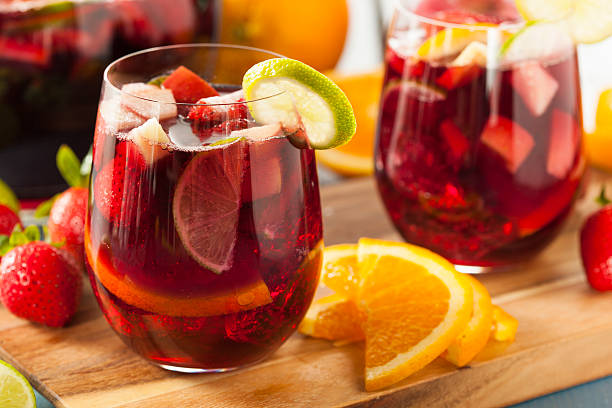

Home
Sangria

Description
This sangria recipe is the obvious choice when you need
a crowd-pleasing summer cocktail. A pitcher of
refreshing sangria is the perfect drink to sip on at
your backyard barbecue or party. So, let us introduce
you to the best sangria recipe we have. It's easy to
make and, even better, it's irresistibly delicious.
From Allrecipes, uploaded by HJACOBY
Ingredients
-
1 (750 milliliter) bottle dry Spanish red wine
-
½ cup brandy
-
½ cup triple sec
-
⅓ cup frozen lemonade concentrate
-
⅓ cup orange juice
-
¼ cup lemon juice
-
¼ cup white sugar (optional)
-
1 medium orange, sliced into rounds
-
1 medium lemon, sliced into rounds
-
1 medium lime, sliced into rounds
-
8 maraschino cherries
-
2 cups carbonated water (optional)
Steps
-
Gather all ingredients.
-
Mix red wine, brandy, triple sec, lemonade
concentrate, orange juice, lemon juice, and sugar
together in a bowl. Add orange, lemon and lime
slices, and maraschino cherries.
-
Serve immediately over ice, or refrigerate 8 hours
to overnight for best flavor. For a fizzy sangria,
add club soda just before serving.
Home